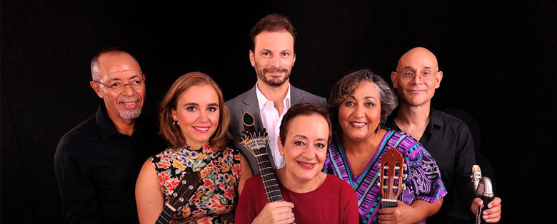

O meu mundo - Tocar é a minha forma de dialogar com o mundo: aliás, a música tem de ser um meio de contar histórias, isso é algo que fui aprendendo e compreendendo ao longo dos anos. Muito mais do que fazer um CD, um registo musical,
o importante é perguntar que história queremos contar, e tentar contá-la o melhor que podemos! É desta forma que surge mais uma viagem, este Mar Magalhães, onde cada música, cada elemento, se dirige a alguém que se reconheça neste ambiente e nesta paleta de cores e sons tão diversos. E a realização, o verdadeiro sucesso, acontece quando uma composição, uma frase que seja, alcança, transforma, toca o Outro. Obrigada aos Mestres que me ensinaram o caminho: Carlos Paredes, José Lopes
e Silva, Maria Amélia Abreu e María Luisa Anido (querida Mimita). Quando encontramos Mestres, daqueles que nos vêem como algo cru mas precioso como uma jóia que, com sabedoria, pode ser polida até ter um brilho orgulhoso, quando temos
a felicidade de encontrar professores destes no nosso caminho, encontraremos sempre o caminho de volta, não importa quão difícil ou sinuosa a viagem seja...Luisa Maria Amaro